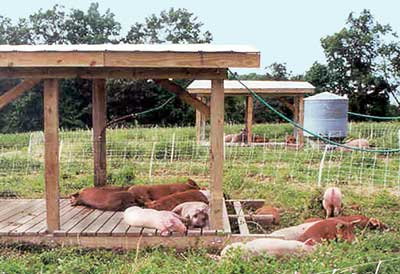

Pigs have a natural instinct for rooting in the ground that farmersand gardeners can use to their advantage. Turn a pig loose on landyou want to plant as a garden, and it will turn up the ground justas efficiently as with a rototiller. Pigs also excel at clearingaway brush in overgrown pastures.
Joel Salatin, author of the books You Can Farm and FamilyFriendly Farming, finishes more than 200 hogs a year on hisdiversified Polyface Farm at Swoope, Va. The pigs are used to tillsome fields before planting and to clear land for pasture. 'We'realways trying to utilize the assets of the animal so that itexpresses its animalness, and a pig fully expresses when it'splowing,' Salatin says.
Pigs can be useful on the farm even in small numbers. David andLise Abazs used three pigs to convert an overgrown field into anorchard on their organic Round River Farm, at Finland, Minn. 'Wewanted to do it so we didn't have to bulldoze,' David Abazs says.The Abazses bought three, constructed a mobile pen for the animals,and then kept moving the pen with the pigs in it across theovergrown field they wanted to clear. By the end of the summer, thepigs had cleared the field. The pigs even cleared away large treeroots; the couple would just sprinkle a little corn beside theroots and let the animals dig.
|
 The electric fence and shade structure, on wooden runners, are moved frequently to new pasture to provide fresh forage and distribute manure evenly. |
|
|